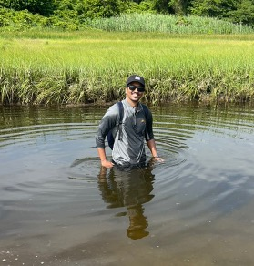
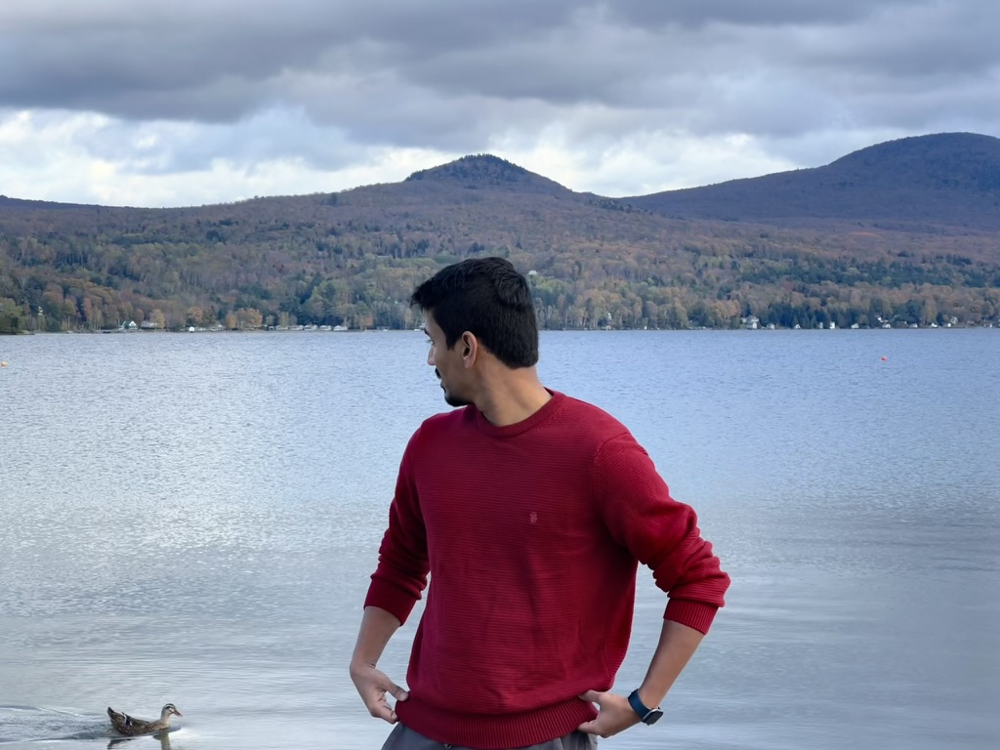
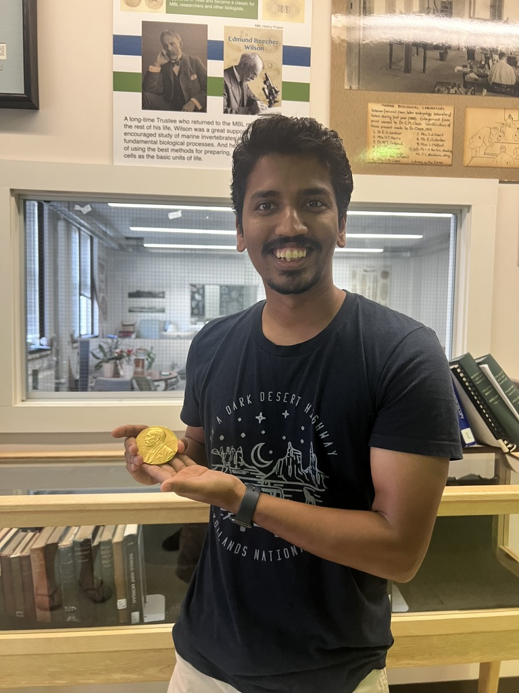

Sarvesh V. Surve
I'm a PhD candidate at Dartmouth's Geisel School of Medicine, in George O'Toole's lab. I finish in June 2027 and am looking for postdoctoral and industry roles in microbiome science.
About
Bacteroides is one of the most common genera in a healthy human gut. My thesis asks whether Bacteroides strains can be evolved to do better under conditions that resemble the cystic fibrosis (CF) gut, and which genetic changes make that possible. The work is now spun out as a startup.
I also run culturing and sequencing studies on gut samples from people with and without CF, manage and analyze Dartmouth CF Kids Cohort samples and clinical isolate collection.
Before Dartmouth I did my MSc at Symbiosis International University in Pune and stayed on as a research fellow, working on probiotic Lactiplantibacillus plantarum and on enzymes from agarwood. In summer 2025 I took the Microbial Diversity course at the Marine Biological Laboratory in Woods Hole.
Outside the lab I follow Formula 1, am working toward visiting every US national park.
-

Woods Hole, 2025 -

Distracted by a duck -

Holding a Nobel Prize
Recent
-
Poster at Microbiome 2026, Cold Spring Harbor Laboratory, on longitudinal gut metagenomes from people with CF before, during, and after CFTR modulator therapy.
-
Outstanding Presentation award at the 2026 Microbial Dark Matter Symposium in Laguna Beach, California, for a poster on the episymbiosis of Gracilibacteria with green sulfur bacteria.
-
Poster at the Molecular Genetics of Bacteria and Phages meeting in Madison, Wisconsin, on genomic adaptation of Bacteroides to the CF gut. It ranked in the top 12 of 330 posters.